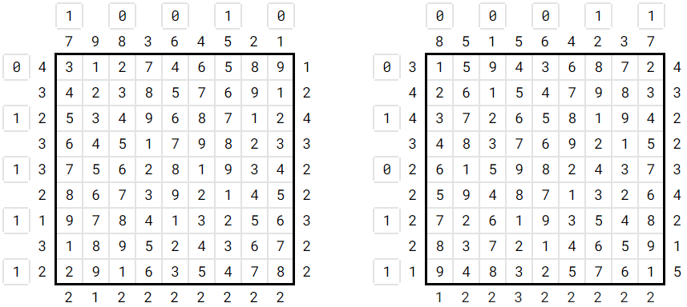

Solution: Off-by-One Error
Answer: LAUNCH
Written by Ryan Thomas
These logic puzzles must be solved while concurrently determining which rows and columns have been shifted up. Each shift can be thought of as a bit: 1 is a shift; 0 is a non-shift. The 5 bits along either axis of each logic puzzle can be converted into 2 binary numbers between 1 and 26.
Converting these numbers to A1Z26 gives the phrase: ROCKET TAKE OFF SIX
| Puzzle | Col shifts | Row shifts | Letters |
|---|---|---|---|
| Skyscraper 1 | 1 0 0 1 0 | 0 1 1 1 1 | RO |
| Skyscraper 2 | 0 0 0 1 1 | 0 1 0 1 1 | CK |
| Killer Sudoku 1 | 0 0 1 0 1 | 1 0 1 0 0 | ET |
| Killer Sudoku 2 | 1 0 1 0 0 | 0 0 0 0 1 | TA |
| Shikaku 1 | 0 1 0 1 1 | 0 0 1 0 1 | KE |
| Shikaku 2 | 0 1 1 1 1 | 0 0 1 1 0 | OF |
| Slitherlink 1 | 0 0 1 1 0 | 1 0 0 1 1 | FS |
| Slitherlink 2 | 0 1 0 0 1 | 1 1 0 0 0 | IX |
| This clues the answer: LAUNCH |
Below are brief tips on how to figure out which rows and columns have been shifted, as well as the solutions.
Skyscrapers:
- Realize that a 9 must be in each row/column, which limits the number of larger numbers that can occur on a given side.
- For example, there can be at most one 9 on a side. Likewise, there can be at most two values greater than or equal to 8, at most three values >=7, … at most seven values >=3, and at most eight values >= 2.

Killer Sudoku:
- Realize each row, column, and nonet (also known as “groups”) must sum to 45. If cages are contained in a given group or in several continuous groups, the difference between the expected sum and the sum of the cages is the number of cages affected by the shifts.
- E.g. if a set of cages is contained between 2 nonets and the sum of the cages is 48, then 3 cages were shifted up.
Shikaku:
- Look for cells that can only be contained by 1 number
- Look for cells that are always contained by numbers, regardless of shifts and positioning
Slitherlink:
- A cell with 0 forces a 0 shift
- A cell with 4 forces a 1 shift